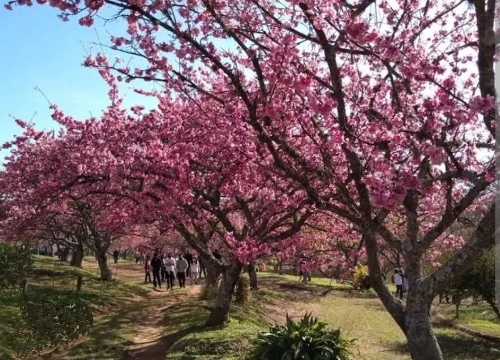

Jardim Oriental
Um espaço que homenageia a cultura japonesa, com elementos tradicionais, como o portal torii. É um dos atrativos do complexo turístico do Lago Artificial.
Garça - SP | Região do Lago Artificial
Conheça alguns dos principais pontos turísticos da Cidade Jardim. Garça oferece espaços para passeios, contato com a natureza, lazer e cultura.
Um espaço que homenageia a cultura japonesa, com elementos tradicionais, como o portal torii. É um dos atrativos do complexo turístico do Lago Artificial.
Garça - SP | Região do Lago Artificial

Um dos espaços de lazer mais conhecidos da cidade. O entorno reúne áreas para passeios, paisagens, espaços culturais e opções de alimentação.
Garça - SP | Bairro Williams

O Bosque Municipal Dr. Belírio Guimarães Brandão possui uma área preservada de Mata Atlântica, espaços de lazer, parque infantil e atividades de educação ambiental.
Garça - SP | Rua Vital Soares

Localizado no complexo turístico do Lago Artificial, o Bosque das Cerejeiras é conhecido pelas árvores que representam uma importante ligação da cidade com a cultura japonesa.
Garça - SP | Região do Lago Artificial
Ajude a divulgar os espaços de Garça. Compartilhe sua sugestão de um local que merece ser conhecido.
Sugira um Local